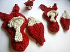
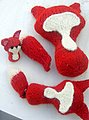
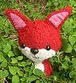

|
||
Premium Patterns Wintry Mix Mitts Love Bytes HawkeyeFree Patterns Kiddie Cadet Summerlin Ruffled Scarf Seamless DS Sock Simply Seamless Pouch Myriads of MushroomsExtras DIY Mitten Blocker Felt Patch Tutorial Yarn Dyeing Tutorial Needle Pouches Knitting Journal |
May 03, 2007 - Posted by Alice Schnebly"Would you like your fox supersized?"
Project Specs I had been wanting to try to make some “supersized” critters since I made these guys a few weeks back. Once the chunky yarn I ordered arrived, I kinda just went for it. I really should have done a felted swatch, but I was worried I was going to run out of yarn. First, I decided to try a single strand of Nashua Chunky on size 15s. I think this turned out quite well, but I knew it wasn’t going to be as big as I wanted it (and I had tons of yarn left over), so I decided to kick it up a notch one more time. This was the first time I got to use the huge tips for my Denise needles. Because I’m not really used to such large needles, the 19s were quite awkward feeling. Luckily, the critters knit up very quickly. I could tell that this was going to be a difficult thing to felt when I finished up. The stitches were huge and bulky, and it seemed that near the increases and decreases it was all a bit looser. These guys took forever to felt! Well, the medium critter took much less time, and only needed a few spots darned together that weren’t felting properly. I think because the fabric was much more uniform he turned out much better. The large critter was knit on too large of needles, and was very difficult to felt. I had to fix up many holes before, during, and after felting. It was just too much of a hassle for me to do that again. He’s cute, but he’s not something that’s up to par if I were giving it as a gift or anything. If I were to try making a bigger one again, I would play around with the numbers instead of the size of yarn and needles. The medium sized critter I would attempt again. He turned out very well, and the safety eyes and nose fit perfectly on him, saving quite a bit of finishing time. Overall, I’m glad that I experimented and even if they’re not perfect, my daughter loves them! |
   Recent ReviewsRecent Posts
 Our Favorites
|
| © 2007 KathrynIvy.com | ||
{kind=link}
{kind=link}
{kind=link}